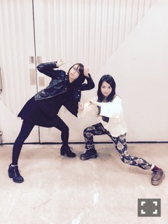

| 2015/02 20 Fri | それどころじゃない 。628回目 |
19歳になりました！
あっという間だよー
次はたちです。
ラストティーンって大事だと思うので
十代の内にできることが
できたらいいなと思っています。
遊びたいし、甘えたい。
けど、しっかりして、自立して、
自覚を持って行動する。
乃木坂46というグループに
自分も追いつかないといけない。
いままで言われてきたこと、
私のことを好きになってくれたことを
私がかたちにしなきゃいけない。
それが仕事だから。
私自身もその仕事がとても好きだから
もっとやりたいと思っています。
今年頑張って追いつきたい。
約3年間やってきて
理想と現実はこうも違うもの
なんだと目の当たりにして
嫌になったことあったけど、
それが甘えだと知って、
自分の弱さを知りました。
でも好きなことが叶ったり
一歩でも近づけたり
嬉しいこともたくさんありました。
私にとって乃木坂46は
とても大きな存在です。
ずっと心配してくれて
応援してくれて
ライブも欠かさず
観に来てくれる家族がいて、
尊敬できるメンバーがいて、
良くしてくれるスタッフさんがいて、
こんな私を好きになってくれて
応援してくれるひとたちが
たくさんいて。
私はこの先もずっと
乃木坂46のことが大好きだと思う。
だからこそ、このグループの為に
なにかしたいと思っています。
もちろん自分の為にも
なにかしなきゃと思っています！

伊藤万理華ってなんか良くない？
と思ってもらえるように頑張ります
2日後、乃木坂46は
デビューして3歳を迎えます。
乃木坂46にとって
来てくださる皆さんにとって
最高の思い出になりますように。
盛大にお祝いしましょう！！
はっぴばーすでー

髪の毛軽くしたい...
まりか
コメント(1566)
2015/02/20 09:36